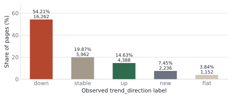
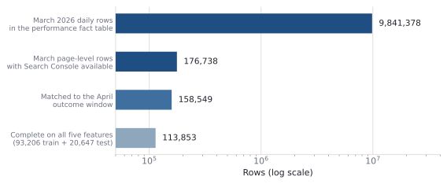
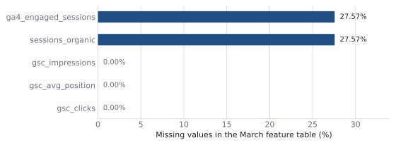
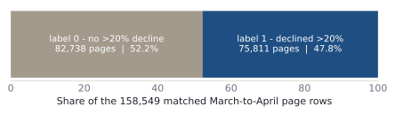
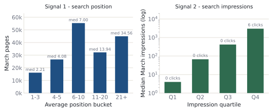
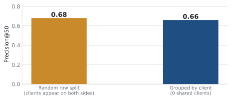
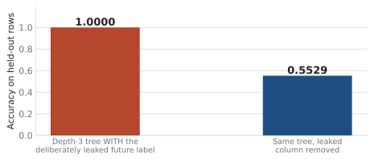
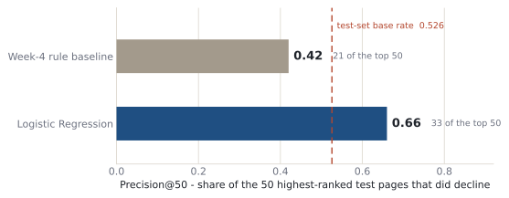
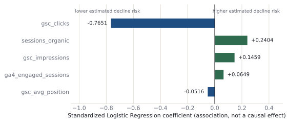

FlyRank ML Internship · Capstone · Applied Search Intelligence
Predicting Search Performance Decline for Content Prioritization
A decision-support study using observed search and engagement signals from the FlyRank ML Internship dataset
Abstract
This study asks whether historical search and engagement signals can help prioritize content pages for human review when they are at risk of future search-performance decline. Using the FlyRank ML Internship dataset, the problem is framed as a binary ranking task in which a page is labeled as declining when its future-period Google Search impressions fall by more than 20 percent. A simple rule-based baseline is compared with Logistic Regression on five features measured before the outcome window, evaluated on a client-grouped held-out split. The Logistic Regression model measured a Precision@50 of 0.66, compared with 0.42 for the baseline under the same evaluation design and a test-set base rate of 0.526. The result is directional evidence that observed search and engagement signals can provide useful decision support for prioritizing human review, but it does not establish causality and the model does not determine which pages should be changed.
01 Introduction & Problem Statement
Content teams routinely have more pages than they can inspect by hand. In the anonymized starter
slice used for orientation, 30,000 pages carried an observed trend label, and 54.21 percent of
them (16,262 pages) were labeled down. Reviewing that volume page-by-page every week is
not realistic, so the practical question is not which page is broken but which page
should a specialist open first.

trend_direction mix in the anonymized starter slice
(30,000 pages, 44 columns). More than half of the slice carries a declining label, which is what
motivated a prioritization question rather than a detection question.
Source: w01_research_question.ipynb · w02_ml_task_framing.ipynb, executed cell outputs.
Research question
Can historical search and engagement signals improve the prioritization of pages for human review, compared with a simple rule-based baseline?
The decision and the action
The framing deliberately treats the model as decision support. A high-ranked page is a candidate for human investigation, which may end in a refresh, in monitoring, or in no action at all.
| Decision | Which content pages should be prioritized for human review first? |
|---|---|
| Unit of analysis | One content page (one client–content pair) at the decision moment. |
| Model output | An estimated decline risk for the following period — a probability used to rank, not a verdict. |
| Who acts | An SEO or content specialist, reading the ranked queue and the reason code. |
| Action taken | Open the page, investigate, and decide: refresh, monitor, or no action. |
| Cost of a false positive | A healthy page is reviewed unnecessarily — writer time and budget spent with no gain. |
| Cost of a false negative | A declining page is not reviewed, and impressions continue to fall unobserved. |
| Why ML rather than a fixed rule | A single threshold such as “CTR below 2 percent” ignores that visibility, position, and engagement interact; a page with low CTR may still be healthy if it ranks well or has high demand. |
Every result below is stated as observed, measured, associated with, directional, or estimated risk. No sentence in this paper claims that a feature causes a decline, that the model predicts a search engine’s behaviour, or that the model determines which pages should be changed. The output is a ranked queue for people to read.
02 Data
The analysis uses the FlyRank ML Internship warehouse released for the internship, read directly over
DuckDB. The modeling table is the content daily performance fact table, whose grain is
client_hash_id × content_hash_id × report_date. Daily
observations are aggregated to one row per client–content pair per window.
Dataset and time windows
March 2026
Verified span 2026‑03‑01 to 2026‑03‑31, 9,841,378 daily rows. All five model features are aggregated from this window only — it is the information a reviewer would actually hold at the end of March.
April 2026
Used exclusively to construct the decline label after the decision moment. No April field enters the feature matrix. June 2026 was left untouched as a sealed final period.

w03_data_contract.ipynb, w04_baseline_score.ipynb, w03_feature_leakage_check.ipynb, w05_model.ipynb.
| Measurement | Value | Where it was measured |
|---|---|---|
| March 2026 daily rows in the performance fact table | 9,841,378 | w03_data_contract |
| Verified March date span | 2026-03-01 → 2026-03-31 | w03_data_contract |
| March rows with Search Console and Analytics both available | 364,347 | w03_data_contract |
| March page-level rows after aggregation (Search Console available) | 176,738 | w04_baseline_score |
| April page-level rows after aggregation | 194,760 | w07_action_playbook |
| Pages matched across both windows (inner join) | 158,549 | w03_feature_leakage_check |
| Modeling rows complete on all five features | 113,853 | w05_model |
| Training rows / held-out test rows | 93,206 / 20,647 | w05_model |
| Clients shared between training and test | 0 | w05_model, w06_validation_audit |
The five features
All five features are aggregated from the March decision window and were available at the decision moment. Rows are read only where the warehouse availability flag confirms Search Console data exists, so an absent integration is never read as genuine zero performance.
Google Search Console impressions summed over March — observed search visibility.
Google Search Console clicks summed over March — observed search demand captured.
Average Search Console position over March. Missing values remain missing rather than being filled.
Organic Analytics sessions summed over March. Unavailable Analytics observations are not treated as genuine zeroes.
Engaged Analytics sessions summed over March. Same availability handling as organic sessions.

w03_feature_leakage_check.ipynb, executed cell output.
What was deliberately excluded
- All April fields — they sit after the decision moment and are therefore future information.
decline_labelandimpression_change_pct— the target itself and a quantity derived from the outcome window.client_hash_idandcontent_hash_id— pseudonymous identifiers used only to group, join, and split; never used as model features.- Analytics observations without an availability flag — not read as genuine zero activity, because zero-fill before an integration start date would be indistinguishable from real inactivity.
- Product decision flags and composite scores — not present in the internship release by design, so the analysis is built from observable evidence rather than from an existing product decision.
This paper reports aggregates, metrics, and coefficients only. It contains no client names, no domains, no URLs, no page titles, no search queries, and no row-level identifiers — not even the pseudonymous hashes used internally for grouping. No credentials or tokens appear anywhere in the repository or on this page.
03 Methodology
Label definition
A page is labeled 1 when its April Search Console impressions fall more than
20 percent below its March impressions, and 0 otherwise. The label is a
warehouse-derived proxy for an observed decline, constructed after the decision moment; it does not
describe why a page declined.

w03_feature_leakage_check.ipynb, executed cell output.
Baseline — the Week-4 scoring rule
Before any model, a transparent rule was built and audited so the model would have something honest to beat. Two signals were tested on March data first. Both were recorded as observed associations, not causes.

w04_baseline_score.ipynb, executed cell outputs.
The rule scores every page on percentile ranks of those observable signals:
| Score | 0.4 × impression_score + 0.3 × position_opportunity + 0.3 × ctr_opportunity, each term a percentile rank |
|---|---|
| Action split | REFRESH at or above the 75th percentile of the score, otherwise MONITOR |
| Reason codes | HIGH_VOLUME_WEAK_POSITION, HIGH_VOLUME_LOW_CTR, LOWER_PRIORITY |
| Known weakness | A page can score highly on weak position or CTR alone while carrying little search visibility — observed in the weak-pick review, where REFRESH items appeared with fewer than 175 impressions. |
Model — Logistic Regression
Logistic Regression was chosen because the target is binary, the output is a probability that can be
used directly for ranking, and the standardized coefficients can be read and challenged by a person.
The pipeline is StandardScaler followed by
LogisticRegression(max_iter=1000, random_state=42), fitted on the five March features.
The goal was never maximum complexity: the model had to beat the Week-4 rule on the same held-out
rows and the same metric.
Grouped validation
The primary split is a GroupShuffleSplit grouped on client_hash_id
(test_size=0.20, random_state=42), so no client appears on both sides. A
programmatic check confirmed 0 shared clients. The same experiment was also run under
a plain random row split as a weaker reference design.

w06_validation_audit.ipynb, executed cell outputs.
Leakage audit
Leakage was tested by deliberately committing it. A copy of the target was added to the feature set as
LEAKED_FUTURE_LABEL and a depth-3 decision tree was fitted. It scored a perfect 1.00 on
held-out rows. With the leaked column removed and nothing else changed, the same tree measured 0.5529.

w03_feature_leakage_check.ipynb, executed cell outputs.
| Field | Used as a feature | Timing | Leakage risk |
|---|---|---|---|
gsc_impressions | Yes | March decision window | Low |
gsc_clicks | Yes | March decision window | Low |
gsc_avg_position | Yes | March decision window | Low |
sessions_organic | Yes | March decision window | Low |
ga4_engaged_sessions | Yes | March decision window | Low |
april_impressions | No | April outcome window | High if used as a feature |
decline_label | No | Derived from April outcome | High if used as a feature |
A final programmatic check confirmed that the intersection between the feature list and the set of future or label-derived columns was empty. This reduces the specific future-window leakage risk that was tested; it does not prove that every possible source of leakage has been eliminated.
04 Results
Precision@50 — model versus baseline
Both methods were scored on the same client-grouped held-out rows with the same metric. Precision@50 asks a question a content team actually faces: of the 50 pages a method puts at the top of the queue, how many did in fact decline?

w05_model.ipynb, executed cell outputs.
| Method | Precision@50 | Positives in the top 50 |
|---|---|---|
| Week-4 rule baseline | 0.42 | 21 / 50 |
| Logistic Regression | 0.66 | 33 / 50 |
| Test-set base rate (rank at random) | 0.526 | — |
On this split the model ranked 12 more true declining pages into the top 50 than the rule did — a measured difference of +0.24 in Precision@50. This is a directional result on one held-out split for one March-to-April transition. It does not establish that the model will rank as well for every client or in every future period, and it does not establish that refreshing a page would cause impressions to recover.
The rest of the metrics, in full
| Metric | Value | Reading |
|---|---|---|
| Precision@50 | 0.66 | The prioritization metric this lane is judged on. |
| Average Precision | 0.5903 | Above the 0.5257 positive rate, so ranking quality across the full list is moderate, not strong. |
| Precision at threshold 0.5 | 0.6309 | When the model does call a page declining, it is right about 63 percent of the time. |
| Recall at threshold 0.5 | 0.0271 | The model flags only a small fraction of all declining pages — it is a queue, not a detector. |
| Test rows | 20,647 | Held-out pages, from clients never seen in training. |
| Misclassified rows at threshold 0.5 | 10,733 | Roughly half the test set. Reported deliberately, not hidden. |
The low recall is the honest headline alongside the Precision@50 result. At the default threshold the model does not find most declining pages, and it was never asked to. Its measured value is in the order of the queue: which small set of pages a reviewer should open first.
Feature coefficients

w05_model.ipynb, executed cell output.
| Feature | Coefficient | Directional reading |
|---|---|---|
gsc_clicks | −0.7651 | Higher March clicks were associated with lower estimated decline risk, holding the other features constant. |
sessions_organic | +0.2404 | Higher organic sessions were associated with higher estimated decline risk — an unexpected direction that is treated as an open question, not an explanation. |
gsc_impressions | +0.1459 | Higher impressions were associated with higher estimated decline risk in this fit. |
ga4_engaged_sessions | +0.0649 | A small positive association. |
gsc_avg_position | −0.0516 | The smallest absolute coefficient of the five — position contributed least to this model. |
Impressions and position were central to the hand-built Week-4 rule, but the model leaned hardest on clicks. The positive coefficient on organic sessions runs against the intuition that traffic protects a page. There is not enough evidence here to explain either result, so both are recorded as associations that warrant further investigation rather than findings.
Where the model is wrong
Two observed error cases from the held-out set show the shape of the failure modes:
| Case | March impressions | Clicks | Avg. position | Estimated risk | Observed label |
|---|---|---|---|---|---|
| False negative — missed a real decline | 104 | 0 | ≈ 8.4 | 0.472 | 1 |
| False positive — flagged a healthy page | 13,876 | 16 | ≈ 2.97 | ≈ 0.506 | 0 |
Both sit close to the 0.5 threshold, which is exactly why the output is used as a ranking rather than a verdict. The five available features do not capture every reason a page declines, so the estimated risk should be read as one input into a human decision.
05 Limitations & Honest Framing
These limits are part of the result, not a disclaimer attached to it. Each one narrows what the measured numbers above are allowed to mean.
- Five signals cannot describe a search ecosystem. Seasonality, algorithm updates, competitor activity, shifts in search intent, and edits made to the page itself are not represented in the feature set at all.
-
The label records that a decline happened, never why. A page labeled
1lost more than 20 percent of its impressions; the label carries no information about the cause. - The coefficients are associations. They describe how the model combined the training-window signals. Reading them as causal effects — particularly the unexpected positive coefficient on organic sessions — would go beyond the evidence.
- One transition, one split. The evaluation covers a single March-to-April window. Repeated time-based validation across several outcome windows would be needed before claiming the result is stable over time.
- Precision@50 describes 50 pages. It is not overall accuracy. The same model measured recall of 0.0271 and misclassified 10,733 of 20,647 held-out rows at the default threshold.
- Grouped validation reduces one risk, not all of them. Holding clients out removes client-level leakage, but pages within a client portfolio can still share characteristics that the model has no way to distinguish.
- Analytics coverage is uneven. Two of the five features are missing for 27.57 percent of March pages, and the warehouse is an unbalanced panel in which clients carry different amounts of history. Excluding incomplete rows changes which pages the model can score at all.
- This is decision support. The model does not determine which pages should be changed, does not establish causality, and does not guarantee future performance.
| Overclaim | What the evidence supports |
|---|---|
| “The model predicts which pages will decline.” | The model ranks pages by estimated decline risk. |
| “The model is 66 percent accurate.” | The model measured a Precision@50 of 0.66 on the held-out test split. |
| “The model tells us which pages need refreshing.” | The model provides decision support for prioritizing pages for human review. |
| “Clicks prevent content decline.” | Higher Search Console clicks were associated with lower estimated decline risk in this model. |
| “The model will generalize to all clients.” | Grouped validation shows it can rank pages for held-out clients; further time-window validation would be needed for broader robustness. |
06 Ranked Recommendations & Action Playbook
The model output is converted into a ranked review queue. Every held-out page receives an estimated decline risk, a priority band, a reason code explaining why it surfaced, and a suggested action for a person to consider. The exported queue holds 20,647 ranked pages; the highest estimated risk observed in it was 0.965.
| Priority | Estimated decline risk | Suggested action |
|---|---|---|
| HIGH | above 0.60 | Review for potential refresh |
| MEDIUM | 0.40 to 0.60 | Review before deciding on a refresh |
| LOW | 0.40 or below | Monitor; no immediate action |
| Reason code | What it means |
|---|---|
LOW_SEARCH_CLICKS | March clicks at or below the queue median. |
LOW_ENGAGEMENT | Engaged sessions at or below the queue median. |
WEAKER_SEARCH_POSITION | Average position at or above the queue median (that is, ranking further down). |
COMBINED_SIGNALS | No single threshold dominates; the ranking comes from the combination. |
Ranked recommendations
-
Work the HIGH band first, as a review queue
Open pages with an estimated decline risk above 0.60 before anything else. The measured Precision@50 of 0.66 applies to the very top of this ordering — it is the part of the queue with evidence behind it.
-
Prefer the model ordering over the rule at the top of the queue
On the same held-out split the model placed 33 of 50 true declining pages at the top, against 21 of 50 for the Week-4 rule. Keep the rule available as a transparent fallback, since it needs no fitted model to explain.
-
Treat MEDIUM as review-before-deciding, not as a smaller HIGH
Between 0.40 and 0.60 the model is close to indifferent. Both observed error examples sit in this band, so the reviewer’s judgement carries more weight than the score here.
-
Leave the LOW band in monitoring
Pages at or below 0.40 stay in monitoring unless separate evidence — a client request, a known page change, a business priority — brings them forward.
-
Read the reason code as “why this surfaced”, never as “why this declined”
A reason code names the signal that pushed a page up the ranking. It is not a diagnosis, and acting on it without opening the page would treat an association as a cause.
-
Re-validate on a new outcome window before extending the result
Monitor Precision@50 on newly labeled periods, Average Precision, the share of the queue landing in HIGH, feature distributions against the training window, and the spread of estimated risk. A single weak month is a trigger to investigate, not to retrain automatically.
Human review requirements
- Does the page actually show a meaningful decline or risk signal when opened?
- Has the search intent behind the page changed?
- Is the page still relevant to the query it was written for?
- Is the content genuinely outdated or incomplete?
- Are there known external factors affecting this page’s performance?
- Is a refresh actually the right response, compared with simply monitoring?
A model score is one input into the decision. It is not the decision.
No-go automation list
None of the following may be driven automatically from this model’s output. Each one requires human judgement and evidence this analysis does not provide.
- Automatically rewriting page content
- Automatically changing titles or meta descriptions
- Automatically publishing content changes
- Automatically deleting pages
- Automatically redirecting URLs
- Automatically declaring a page “bad”
- Automatically spending a client’s content budget
- Claiming that a refresh caused a performance improvement
- Establishing causality of any kind
- Guaranteeing future performance
07 Reproducibility
Every number on this page comes from an executed cell in one of the notebooks below. Each notebook opens directly on GitHub, and each runs top to bottom in Colab against the gated warehouse.
Configuration that fixes the result
| Data source | FlyRank/internship-warehouse on Hugging Face, read with DuckDB over the Parquet partitions (gated: access request and data-use terms required) |
|---|---|
| Table | Content daily performance fact table, month partitions 2026-03 and 2026-04 |
| Row filter | WHERE gsc_data_available IS TRUE, aggregated by client and content |
| Features | gsc_impressions, gsc_clicks, gsc_avg_position, sessions_organic, ga4_engaged_sessions |
| Label | (april_impressions − march_impressions) / march_impressions × 100 < −20 |
| Split | GroupShuffleSplit(n_splits=1, test_size=0.20, random_state=42) grouped on client_hash_id |
| Pipeline | StandardScaler() → LogisticRegression(max_iter=1000, random_state=42) |
| Metric | Precision@50 on the held-out split, plus Average Precision, precision and recall at threshold 0.5 |
| Environment | Google Colab · duckdb, pandas, numpy, scikit-learn |
Artifacts the notebooks write
work/outputs/baseline_action_score.csv— the Week-4 ranked baseline queue with scores, reason codes, and actions.work/outputs/action_playbook_queue.csv— the Week-7 ranked review queue, 20,647 rows with estimated risk, priority, reason code, and suggested action.work/outputs/w07_playbook_summary.json— model, features, validation design, and metrics, recorded so this paper can be traced back to the run.work/figures/make_figures.py— regenerates every figure on this page from the values printed in the notebooks; each constant carries a comment naming the notebook and cell it came from.
The exported queues are regenerated by the notebooks and are not committed to version control —
the repository’s data-use rules keep row-level data out of git. This page is a static site
(index.html, assets/paper.css, assets/paper.js,
work/figures/*.svg) served from the repository root, with no build step and no external
requests.
08 Acknowledgments & Data Credit
This project was completed as part of the FlyRank ML Internship track, Applied Search Intelligence: Google Search Ranking & Discoverability. The weekly assignment structure, the data contract discipline, the deliberate leakage exercise, and the requirement to justify every claim in careful language all come from that programme, and they shaped this paper as much as the modeling did.
The analysis uses the publicly released FlyRank ML Internship dataset, accessed through the gated Hugging Face warehouse under its data-use terms. It reproduces no client names, no domains, no URLs, no page titles, no search queries, and no other private information. Client and content identifiers exist in the warehouse only as pseudonymous hashes, were used solely for grouping, joining, and splitting, and are not published anywhere on this page.
Built on the FlyRank ML Internship dataset
Data source: flyrank.ai · Warehouse: FlyRank/internship-warehouse (gated)
Author. Umair Mehfooz — FlyRank ML Internship, Content Refresh Prioritization lane. Code and notebooks: github.com/UmairMehfooz/Ml-Internship.
Scope of this paper. It reports what was observed and measured on one March-to-April transition of one dataset. It is decision support for human review. It does not establish causality, does not predict a search engine’s behaviour, and does not determine which pages should be changed.